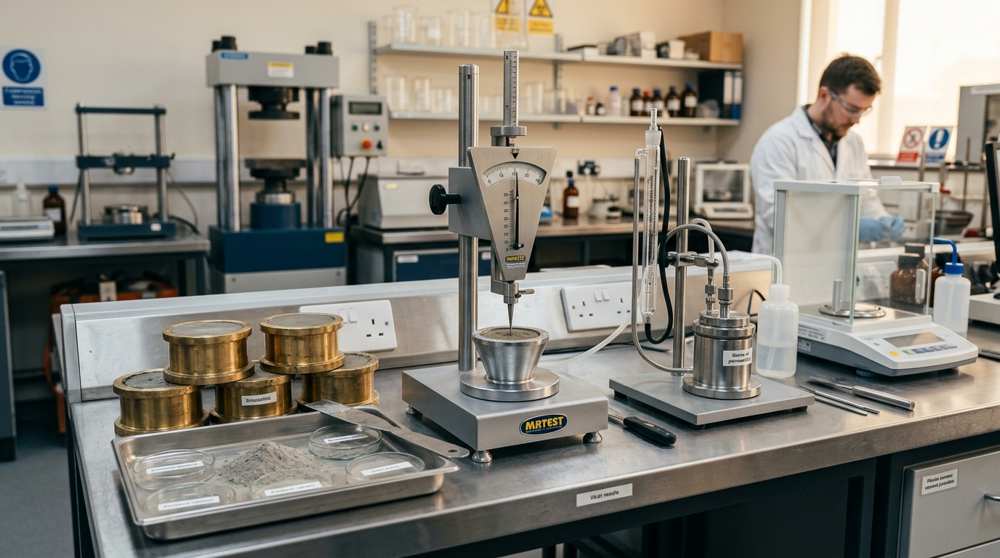

How to Set Up a Complete Civil Quality Laboratory
A step-by-step guide to planning, equipping, and commissioning a civil quality lab — from equipment selection to NABL compliance.
Read More →Accurion Technologies is a trusted manufacturer, supplier, trader, and service provider of complete Civil Quality Laboratory Equipment and NABL-accredited calibration solutions.
We specialise in complete civil engineering laboratory setup for testing of Concrete, Cement, Soil, Bitumen, Aggregates, Steel, Water, and Construction Materials — from equipment supply to installation and after-sales support.
Learn More About Us
Industry-standard testing equipment for every civil engineering laboratory requirement

Cube moulds, CTM, slump cones, vibrating tables & more
View Products →
Proctor compaction, Atterberg limits, CBR, consolidation
View Products →
Penetration, softening point, ductility, flash point testing
View Products →
Vicat apparatus, Blaine air permeability, Le Chatelier
View Products →
Rebound hammer, UPV tester, rebar locator & more
View Products →
Precision, analytical, industrial & high-precision balances
View Products →
Aquasol kits, turbidity meters, pH meters, TDS meters
View Products →Explore our complete product catalogue including glassware, moulds, chemicals & more
Browse All →Complete source for Equipment & NABL-Accredited Calibration Services — no need to coordinate multiple vendors.
Pan India supply network ensuring timely delivery to construction sites, labs, and institutions nationwide.
Dedicated customer support team providing custom solutions tailored to your project and laboratory requirements.
All equipment delivered with NABL Calibration Certificate (if required), ensuring compliance and accuracy for your operations.
Over 8 years of industry expertise serving contractors, infrastructure companies, government departments, and industrial clients.
Contact us today for a customised quote or lab setup consultation.
Contact Us TodayBeyond equipment supply — we provide end-to-end laboratory solutions
Professional NABL-accredited calibration services for all types of civil lab equipment. We ensure your instruments meet the highest accuracy and compliance standards.
Learn MoreEnd-to-end laboratory setup solutions — from planning and equipment selection to installation, commissioning, and documentation as per project requirements.
Learn MoreExpert repair and preventive maintenance for all types of laboratory equipment. Minimise downtime and keep your lab running at peak performance.
Learn MoreInsights, guides, and technical resources for civil laboratory professionals
A step-by-step guide to planning, equipping, and commissioning a civil quality lab — from equipment selection to NABL compliance.
Read More →
NABL accreditation is more than a certificate — it is a commitment to traceable measurement accuracy. Here's everything you need to know.
Read More →
Why rigorous material testing is the backbone of safe, durable infrastructure — and how the right equipment makes all the difference.
Read More →Everything you need to know about our civil testing equipment, NABL calibration, and laboratory setup services.
Accurion Technologies supplies a comprehensive range of testing equipment for Concrete, Cement, Soil, Bitumen, Aggregates, Non-Destructive Testing (NDT), Water Quality, High-Precision Lab Balances, Moulds, Glassware, and Reagents—all manufactured to conform with IS, ASTM, and BS standards.
Yes. We provide NABL-accredited calibration services with ISO/IEC 17025 traceability for Compression Testing Machines (CTM), UTMs, proving rings, digital load cells, electronic balances, and dimensional instruments.
Yes. We provide end-to-end turnkey laboratory setup for construction contractors, infrastructure developers, RMC batching plants, and engineering institutions—covering equipment selection, civil layout planning, Pan-India logistics, on-site commissioning, and staff operation training.
We provide Pan-India delivery from our Delhi facility, ensuring prompt, insured, and secure transit to project sites, central testing facilities, and remote infrastructure locations nationwide.
You can request a quote by clicking "Enquire Now" on any product card, submitting our online contact form, calling us directly at +91 83838 51980, or connecting with our sales team via WhatsApp.